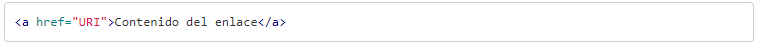

Los enlaces en HTML son muy impportantes ya que por medio de estos podemos comunicar una pagina a otra, ya que esta forma enlazando los documentos HTML podemos acajar tejiendo lo que es internet.
Para crear un enlace en HTML se utiliza el elemento A con la sintaxis:
El objetivo principal de este sera enlazar un destino. Para poder enlazarlo se utilizara el atributo href. El valor del atributo href puede ser cualquier URI que represente un recurso. De manera que el enlace en HTML se creara con la sintaxis:
Destino enlace
Si no se configura el navegador web que se este utilizando el enlace se abrira en la misma ventana en la que se tiene el enlace.
Para hacer esto lo podemos hacer mediante el atributo target, estos son algunos valores que se admite en target.
- _blank, intentara abrir el enlace en una nueva ventana. La ventana no tendra nombre
- _self, el usuario intentara abrir en enlace en el mismo marco donde esta el codigo actual.
- _parent, el usario intentara abrir el enlace en frasemet inmediatamente superior al que se encuentra la pagina.
- _top, se abrira el enlace en la ventana padre. En el caso de que exista un frasemet lo eliminara y se hara con toda la ventana.
- nombre_marco, interntara abrir en el enlace frame que coincida con el nombre. En caso de no existir un frame con ese nombre lo abrira en una nueva ventana, asignandole dicho nombre.

Titulos de enlaces
Sirve oara enlazar contra un recurso de la web, servidor, directorio, dominio. Se describe lo que enlaza es el contenido que se encuentra entre las etiquetas A.
El elemnto A ofrece un atributo llamado title, donde se puede describir de una forma textual el destino enlace.

Tomado de.Manual web.https://www.manualweb.net/html/enlaces-html/